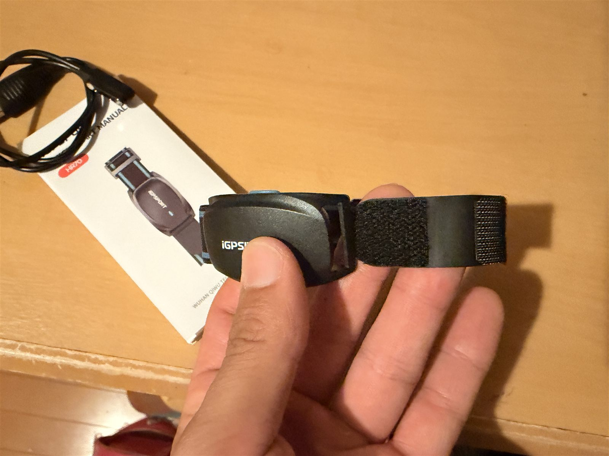
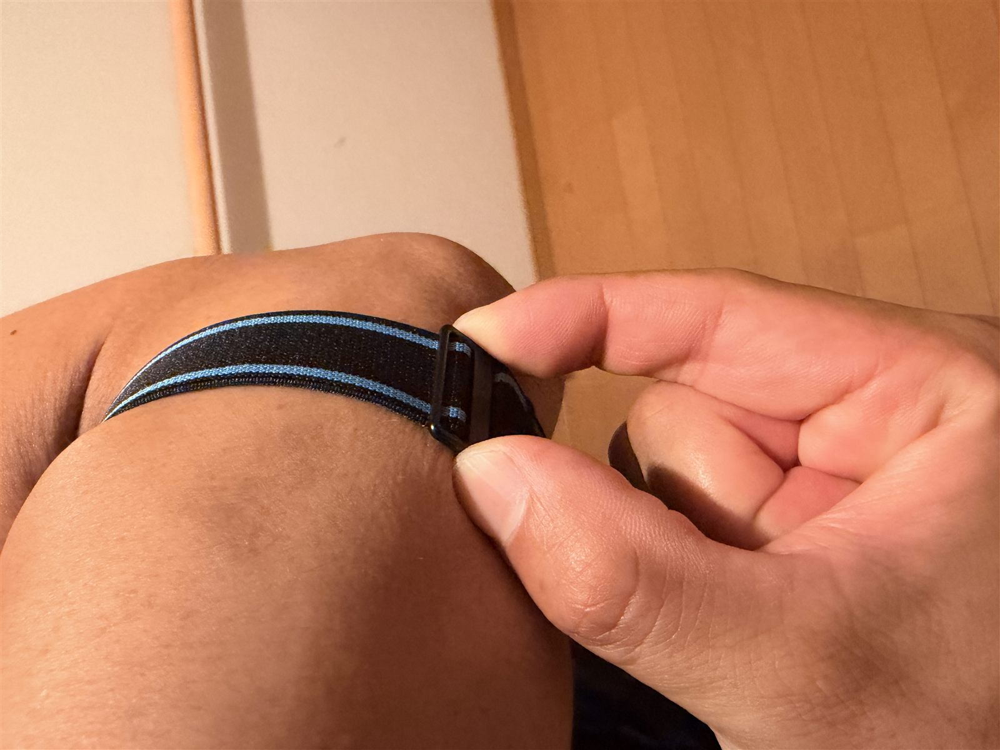
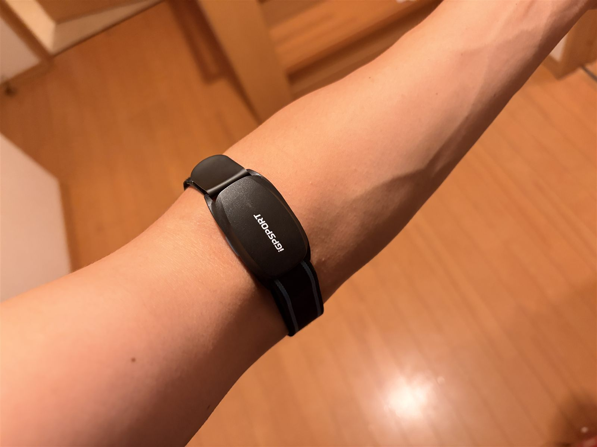

iGPSPORT HR70レビュー。胸ベルトが苦手でも心拍が取れた
心拍計を10年以上使っていなかった。正確には昔は使っていたが、胸に巻くタイプがどうにも苦しくて、いつの間にかやめてしまった。それが今回、腕バンド型の iGPSPORT HR70 を買って、10年ぶりに心拍計を復活させた。

全部読むのが面倒な人向けまとめ
- 買ったものiGPSPORT HR70（腕バンド型心拍計）/ 6,054円
- 選んだ理由胸ベルト式が苦手。腕バンド型なら続けられそう
- 使ってみて胸が苦しくない・装着が楽・走り出しから違和感なし
- データGarmin Edge 530に心拍が入った（平均141 / 最大170bpm、呼吸数も）
- Garmin評価やたらリカバリー扱いが、少し現実に近づいた
- 結論胸ベルト式が苦手な人にはかなり良さそう
なぜ10年ぶりに心拍計を買ったのか
正確には、昔は心拍計を使っていた。胸に巻くタイプで、これがどうにも苦しかった。走っている最中も「心拍を測っている」というより「胸に何か巻いている」という感覚の方が強くて、いつの間にか使わなくなった。そこから10年以上、パワーメーターもあるしGarminにパワーもNPもTSSも出るので、それで十分だと思っていた。
でも最近、AIと富士ヒルゴールドを目指す実験をしている中で、何度か言われた。「心拍計がないと、Garminのトレーニング効果はズレる可能性がある」と。たしかに、普通に苦しんだりしているのに、Garminからはやたらリカバリー扱いされることがあった。こっちは苦しんでいるのに、Garminはリカバリーと言う。温度差がすごい。機械と喧嘩しても仕方ないが、せっかくならデータはもう少しちゃんと取りたい。そこで、腕バンド型の心拍計を買ってみた。
HR70を選んだ理由
購入したのは iGPSPORT HR70、価格は6,054円だった。一番の理由は、胸ベルト式ではないこと。胸ベルト式が嫌で心拍計をやめた人間が、また胸ベルト式を買ってもたぶん続かない。HR70は腕に巻くタイプなので胸が苦しくなく、これが大きい。
心拍計はデータを取るための道具だが、使うのが面倒だったり装着が不快だったりすると、結局使わなくなる。私の場合、性能以前に「続けて使えるか」が大事だった。その点、腕バンド式ならかなり気軽に使えそうだった。
HR70のスペックと特徴
調べた範囲では、HR70は腕バンド型の心拍計で、Bluetooth 5.0とANT+に対応している。つまり今私が使用しているGarminの530などのANT+サイクルコンピューターと接続できる。主な特徴はこんな感じ。
- 形状 / センサー腕バンド型 / PPGセンサー
- 接続Bluetooth 5.0 / ANT+対応
- 心拍数範囲40〜240bpm
- 防水IPX7
- 充電 / 駆動マグネット式 / 最大約65時間
- その他心拍ゾーンのLED表示、心拍アラート機能

スペックだけ見ると、ロードバイク用途としては十分そう。特にANT+対応なのはありがたい。Garmin Edge 530で使う前提だったので、ここはかなり大事だった。
実際に腕に巻いてみた
今回は、肘前のよく注射をするあたり（肘の内側付近から前腕の上の方）に装着した。実走時はその上から長袖の薄い日焼け止めインナーを着ていて、その影響もあるかもしれないが、ライド中にズレる感じはなかった。装着して走り出した時点で違和感もほぼなく、これはかなり良い。

胸ベルト式の時は走り出す前からすでに少し気になっていたが、HR70は腕に巻いてしまえば存在感がかなり薄い。「付けていることを忘れる」とまでは言わないが、少なくとも走行中に邪魔だとは感じなかった。

Garmin Edge 530で心拍が取れた
今回の太平ライドで、HR70を初投入した。Garmin Edge 530に心拍データが入り、ライド後の記録にも反映された。この日のデータは次の通り。
- 平均心拍 / 最大心拍141bpm / 170bpm
- 平均呼吸数 / 最大呼吸数29brpm / 40brpm
これまで見えていなかった情報が一気に増えた。パワーだけでも練習内容はある程度分かるが、心拍が入ると「体がどれくらい頑張っていたか」がかなり見やすくなる。たとえば同じ250Wでも、心拍が低めで余裕がある時と、高くて苦しい時では意味が違う。パワーは外に出した出力、心拍は体の反応。両方あると、ライド後の振り返りがかなりしやすい。
呼吸数って何？
心拍計を使ったら、呼吸数も表示されていた。最初に思ったのは「呼吸数って何？」である。AIに聞いたところ、呼吸数は1分間に何回呼吸したかを示す数値らしい。吸って吐いて1回。安静時の成人はだいたい12〜20回/分くらいで、運動中はもっと高くなるとのこと。今回のライドでは平均29brpm、最大40brpmだった。
正直、呼吸数をどう使いこなせばいいかはまだ分からない。ただ数値としてはそれっぽくて、登って苦しい所では呼吸も上がり、休んでいる所では落ち着く。「ああ、ちゃんと体は頑張っていたんだな」と後から確認できる。今のところ呼吸数はメイン指標というより補助データで、パワー・心拍・NP・TSS・体感に少し加わることでデータの解像度が上がる感じ。使いこなせるかは、これからの実験である。
Garminの評価が現実に近づいた
心拍計を付けて一番分かりやすかった変化は、Garminの評価だった。これまでは心拍計なしで走っていたので、Garminのトレーニング効果が体感とズレることがあった。特に、100％リカバリー扱いされる。ローラーで苦しんでもリカバリー、外で登ってもリカバリー。こっちは苦しいんだが。
でも今回、心拍計を付けて走ったら、Garminの評価がかなり現実に近づいた。太平ライドは距離40.64km・TSS120.3とかなりしっかり踏んだ日で、Garmin側でも今までのような謎のリカバリー判定ではなく、ちゃんと高強度有酸素寄りの評価になった。これだけでも、心拍計を導入した意味はかなりある。回復時間60時間とか表示された気がしたが、気のせいかもしれないので見なかったことにした。
胸ベルト式と比べて良かったところ
- 苦しくない胸の締め付けがない
- 装着が楽腕にベルクロで留めるだけ
- 気軽「今日は付けるか」と思える
- 違和感なし走り始めた時点で気にならない
- データが入るGarminに心拍が反映、分析しやすい
特に大きいのは、苦しくないこと。精度やスペック以前に、使い続けられるかどうかが大事だと思う。どれだけ高性能でも、付けるのが嫌なら使わなくなる。その点HR70は「今日は心拍計を付けるか」と気軽に思える。
今のところ不満点はない
初回使用時点では、不満点は特にない。もちろん、まだ1回使っただけなので、長期的な耐久性やバッテリーの実際の持ち、夏場の汗でどうなるかはこれから見る必要がある。心拍の精度も胸ベルト式と比較検証したわけではないので、「HR70は絶対に正確」とは言わない。ただ、今回の太平ライドで出た数値は体感とかなり合っていて、少なくとも私が練習の振り返りに使うには十分そうに感じた。
ライド後のメンテも簡単そう
ライド後のメンテについてもAIに相談した。腕に巻くものなので汗は当然つくが、基本は、本体の汗を拭く・バンドは水で軽くすすぐ・タオルで水気を取る・風通しの良い場所で乾かす・完全に乾いてから充電する、このくらいで良さそう。逆に、洗濯機・乾燥機・熱湯・アルコール直噴・濡れたまま充電は避けた方がいい。胸ベルト式より手入れはかなり気楽に感じる。
こんな人には良さそう
- 胸ベルトが苦手締め付けが嫌で心拍計から離れていた人
- 心拍を取りたいロードで体の反応も見たい人
- Garmin評価を直したいリカバリー連呼を現実に近づけたい人
- 気軽さ重視続けやすい心拍計がほしい人
逆に、心拍精度を限界まで突き詰めたい人や、胸ベルト式と完全比較したい人には、この記事だけでは足りないと思う。私はそこまで厳密な検証はしていない。あくまで、胸ベルト式が苦手で10年以上心拍計から離れていたロードバイク乗りが、HR70を使ってみた初回レビューである。
今日やってみて思ったこと
心拍計を付けると、ライド後のデータがかなり面白くなる。今まではパワー中心で見ていて、それでも十分だと思っていた。でも心拍が入ると体の反応が見えて、さらに呼吸数まで出てくる。使いこなせるかはまだ分からないが、データの解像度が一段上がった感じはある。
そして何より、HR70は苦しくなかった。胸ベルト式が嫌で心拍計をやめた私にとって、これはかなり大きい。6千円でこのデータが取れるなら、個人的にはかなり満足している。富士ヒルゴールドを目指す実験は、パワーだけでなく心拍も見ながら進める段階に入った。AIに言われて導入したが、悔しいけどこれはやってよかった。流石東大主席の頭脳と名高いAI、やるじゃん！
関連記事
 HR70の続き
機材とアイテム / 2026.07.01
HR70のバッテリー残量をGarminに表示。Sensor Batteryを使ってみた
HR70の続き
機材とアイテム / 2026.07.01
HR70のバッテリー残量をGarminに表示。Sensor Batteryを使ってみた
iGPSPORT HR70の残量をGarmin Edge 530に表示するため、Connect IQのSensor Batteryを試した記録。Show Heart Rate設...
 心拍データの実走
外ライド・実走 / 2026.06.16
心拍計を付けて太平ライド。レスト明けでもTSS120
心拍データの実走
外ライド・実走 / 2026.06.16
心拍計を付けて太平ライド。レスト明けでもTSS120
月曜レスト明けに太平でしっかり登ったライド。腕バンド型心拍計を10年ぶりに初投入。登る所は登り休む所は休む、でTSS120.3でした。
 機材とアイテム
機材とアイテム / 2026.06.17
Aethos2乗りが、富士ヒル目線でSL8と比べてみた
機材とアイテム
機材とアイテム / 2026.06.17
Aethos2乗りが、富士ヒル目線でSL8と比べてみた
普段ライド用に買ったAethos2を、富士ヒルゴールド目線でTarmac SL8と比べ直した。注ぐTarmac・寄り添うAethos、8%が分かれ目、ホイールの迷いも。結論は「...